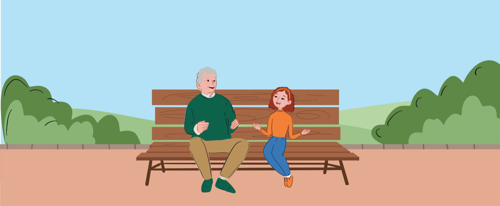

Jeta në Kosovë dikur dhe sot
Qyteti dikur dhe sot
Situata 1.
Klea jeton në Prishtinë. Ajo shpesh shkon te gjyshërit dhe bisedon me ta. Sot ajo me gjyshin shkuan në parkun e lagjes dhe biseduan për qytetin dikur dhe sot.
Gjyshi tregoi: “Qyteti dikur ishte më i vogël, kishte banorë më pak. Nuk kishte shumë mjete komunikacioni. Ndërtesat ishin larg njëra-tjetrës. Merrnim shërbimet e nevojshme në të gjitha institucionet. Njerëzit merreshin me zeje të ndryshme, si: farkëtarë, marangozë, këpucarë, rrobaqepës, plisaxhi e shumë të tjera. Tregtarët kishin dyqane të vogla nga të cilat siguronin jetesën. Kishte parqe të gjelbëruara në çdo lagje.
Sot gjithçka duket sikur ecën me shpejtësi. Dendësi e ndërtesave, lagje të reja, qendra të mëdha tregtare, komunikacion i pandalshëm, gjelbërim pak, sepse të gjitha pjesët e tokës shfrytëzohen për ndërtim. Ka ndryshime në rrugë, në ndërtesa, në objekte të ndryshme, si dhe në zhvillim teknologjik. Të gjithë janë në lëvizje.”
